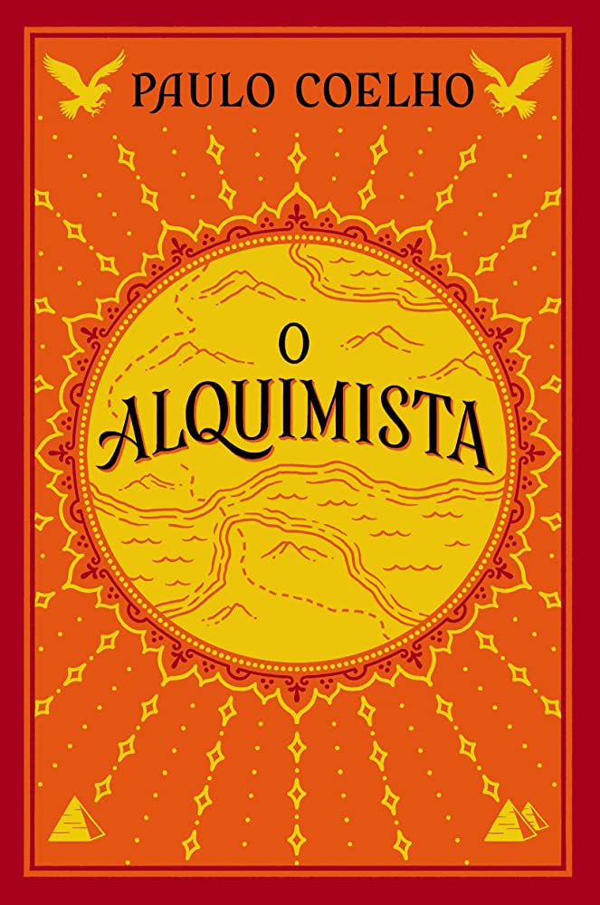
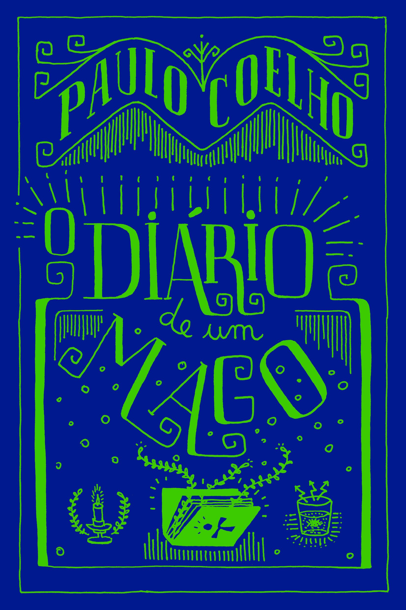
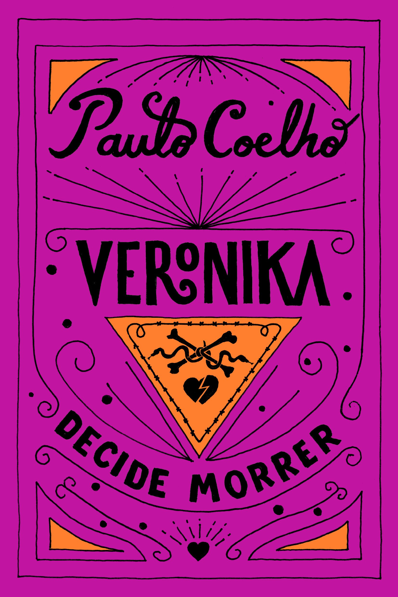
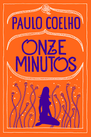

Paulo Coelho de Souza, nascido em 24 de agosto de 1947, na cidade do Rio de Janeiro, é um renomado escritor, letrista, jornalista e compositor brasileiro. Sua notável contribuição para a literatura e suas diversas habilidades artísticas o tornaram uma figura proeminente no cenário cultural brasileiro e internacional. Atualmente, Paulo Coelho ocupa a 21ª cadeira na prestigiosa Academia Brasileira de Letras, instituição reconhecida por abrigar os mais ilustres escritores e intelectuais do Brasil. Sua trajetória na literatura é marcada por obras que inspiram, questionam e despertam reflexões profundas sobre a existência humana.
| Capa | Nome do Livro | Nota Média de Avaliação | Data de Lançamento |
|---|---|---|---|
|  | O Alquimista |
4.7/5.0 | 1988 |
|  | O diário de um mago |
4.6/5.0 | 1987 |
 |
Brida |
4.7/5.0 | 1990 |
|  | Veronika Decide Morrer |
4.7/5.0 | 7 de agosto de 2009 |
|  | Onze Minutos |
4.5/5.0 | 2003 |